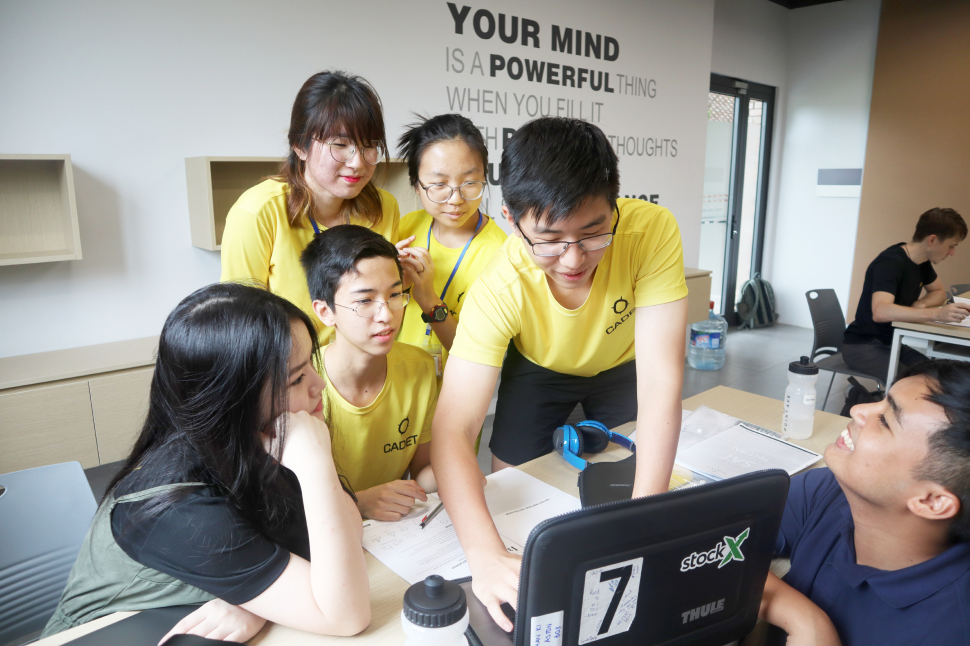
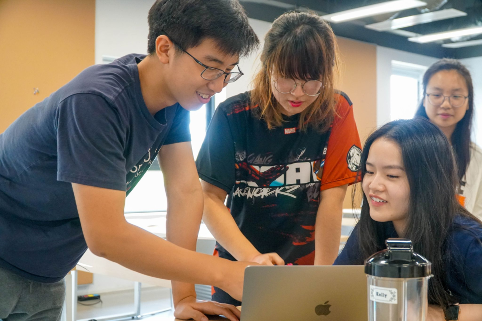
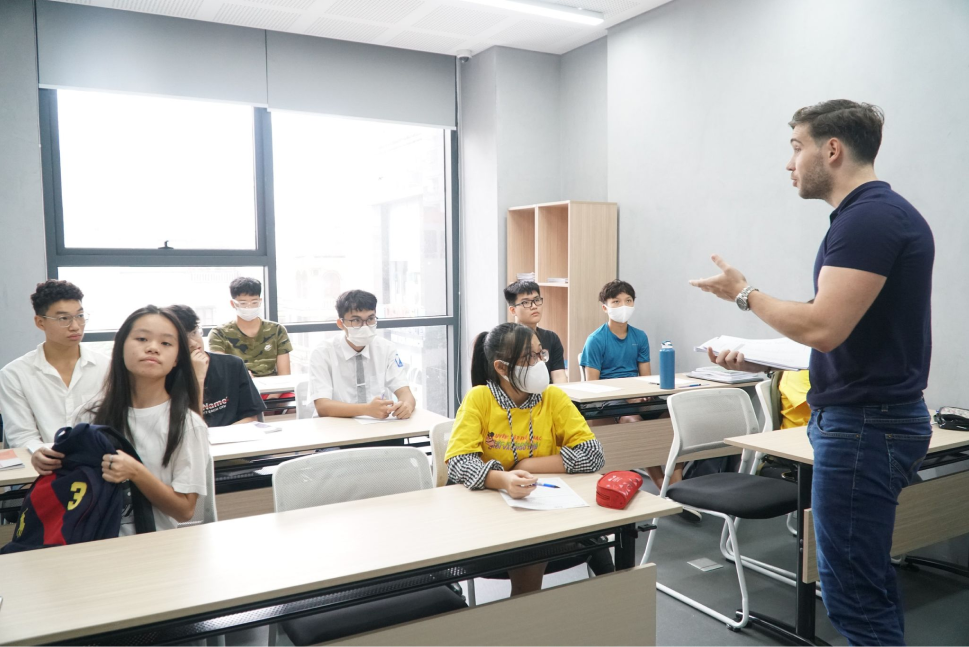
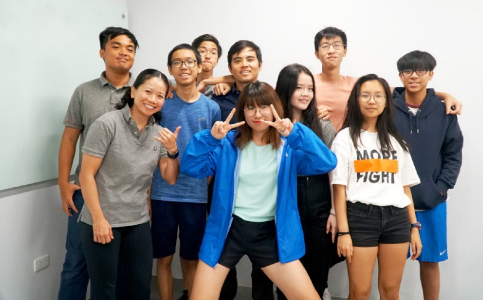

In preparation for Point Avenue’s upcoming Winter Intensive, our test prep instructors thought it essential to revisit our understanding of this fundamental skill and its relationship to academic preparedness. This winter session, as part of a holistic, inquiry-based teaching methodology, our team will be reinforcing uncompromising academic focus with that of rational exploration. Our destination? The induction and cultivation of critical thinking. Our vehicle? Two workshops on how to accomplish this.
What exactly is meant when ‘critical thinking’ is invoked as the root cause of or remedy for a student’s academic achievement or failure? An answer comes from an insightful sixth-grader at the Olympia School during a recent class discussion on a related topic. “Critical thinking means thinking deeper.” He isn’t wrong; essentially, that is what it is. However, a more precise definition is required if we are to examine the importance of thinking critically in correlation to mastering university placement tests such as the SAT and AP.

In logic, the object of study is reasoning. Logical thinking is an activity that students engage in–when they make claims, back them up with reasons, or make inferences and draw conclusions about what follows from a set of statements. Like many activities, reasoning can be done well, or it can be done poorly. The goal of logic is to distinguish sound reasoning from flawed reasoning. Once a student has become proficient at this, they have laid the groundwork for a life of “deep thinking,” i.e., critical thinking.
Unquestionably, the value of such a process of thinking, especially in education, is evident. Still, how can critical thinking be induced across ELEM, MSHS, and particularly Test Prep programs? Apart from the consistent encouragement of diligence, productive study habits, and independent inquiry, critical thinking is a prerequisite to mastering standardized tests, whether that be language tests such as the IELTS or TOEFL, or concerning academic preparedness tests like the SSAT, ACT, SAT, and AP.

The most logical question then is; how do teachers and parents cultivate critical thinking in students? How do we instill such an analytical reasoning discipline in students who are deficient and develop it in students who already possess it?
First, we must provide students with the basics. A solid foundation in proper test understanding must be laid brick by brick or, more precisely, concept by concept by the instructor in tandem with the student. Second, we must continually promote an intellectual environment that encourages independent exploration and practice, creative inquiry, and rigorous repetition.
What do we mean by an intellectual environment? Where does thinking happen? That may sound like a silly question. Thinking, obviously, happens in our minds. But students do more than just think. They also share those thoughts. Opinions do not remain confined within our heads: we also express ourselves in our words and behavior. The ideas described and traded around in these ways and in these places, especially the more prevalent ideas, constitute the intellectual environment that we exist in. At Point Avenue, the environment our mentors strive to nurture and advocate for our students is paramount since it will impact how they view the world around them and fundamentally themselves.

That leads us to another question; what exactly is a worldview? How are we guiding our students in building a dynamic, bold, and resilient one? A worldview is the sum of related answers to the most critical questions in life. Thus our worldview is intimately tied to our sense of who we are, how we want to live, and how we see our place in the world. Actively reinforcing our opinion of ourselves is essential since that sense of self will dictate how we respond to obstacles, whether academic or not.
That leads us to critical thinking itself. Usually, logic and critical thinking skills are invoked in response to a need. And often, this need takes the form of a problem which can’t be solved until we gather information. Sometimes the problem is a practical one. “How do I spend my PA bucks?” In an academic environment, however, these problems are, of course, more distinct. “What did Timothy Matlack actually mean when he wrote The Declaration of Independence?” How do we guide our students in answering such questions on a standardized test? By helping them ask the right questions in return.
Perhaps more than problems do, good questions get the mind thinking. Questions express doubts, identify predicaments, call for solutions, and demand answers. Indeed we might not fully understand the nature of a given problem until we have asked a decent question about it. And here is where the symbiosis between teacher and students truly begins. To succeed and progress, students need to know their weaknesses and be unafraid to share that. Only then can we as teachers hone in on correcting gaps in students’ reasoning process. How do we do this? We mentor our students in establishing good habits and, more importantly, avoiding detrimental habits such as intellectual laziness, saving face, peer pressure, etc. Instead, we encourage curiosity, courage, patience, and precision.

This winter, our instructors will focus on such techniques of rational inference and analytical judgment. These include the study of informal logic, traditional patterns of reasoning, and some distinctive analytical methods of inquiry to help students understand how to approach standardized tests. This course will provide students with the competencies that are requisite to success at university and life-long learning.
See you this December!
Test Prep Team